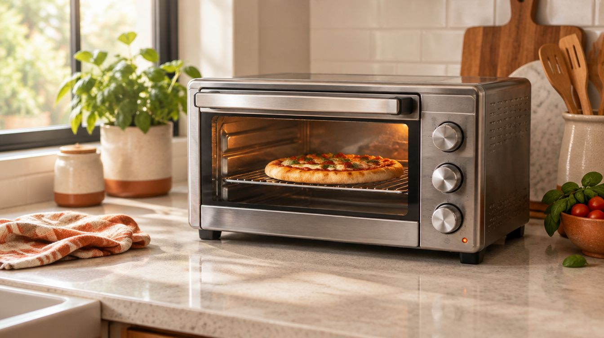
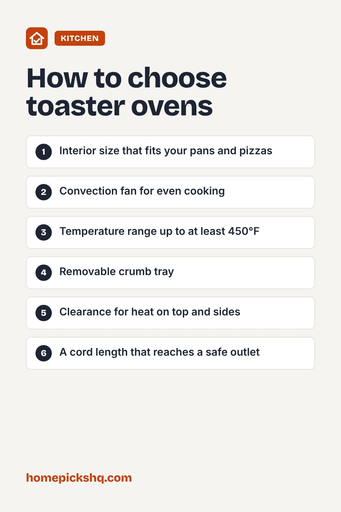

Best Toaster Ovens: How to Choose One That Replaces Your Oven

How we write these guides: we research manufacturer specifications, expert guidance, and owner feedback. We do not claim to have lab-tested every product. Links to Amazon on this page are affiliate links; see our disclosure.
A toaster oven can handle toast, reheated leftovers, roasted vegetables, and small baking jobs without heating a full-size oven. That makes it one of the most used small appliances in many kitchens. Models vary widely in size and features, so it helps to know what to look for before you buy.
Browse toaster ovens on Amazon
Interior size matters more than exterior size
Manufacturers often describe capacity by how many slices of bread or what size pizza fits. Check the interior width and depth, and make sure your most-used baking pan or a 9 by 13 inch dish fits if you plan to bake. Compare the interior dimensions against the footprint on your counter, because some ovens are large on the outside but small inside.
Convection and air fry modes
Convection toaster ovens use a fan to circulate hot air, which speeds cooking and browns food more evenly. Many models now include an air fry setting that runs the fan at a higher speed, usually with a mesh basket or tray. These can crisp frozen foods well, though a dedicated basket air fryer may be slightly faster for small batches.
Controls and presets
Analog dials are simple, reliable, and easy to read. Digital controls offer presets and precise temperatures but add more parts that can fail. Look for a timer with an audible alert, a temperature range that reaches at least 450°F, and a toast shade setting if you toast bread often.
Power and placement
Most toaster ovens draw between about 1,400 and 1,800 watts, so avoid sharing an outlet with another high-power appliance. Leave clearance around the oven as directed in the manual, and do not place it directly under cabinets without checking the space requirement, because the top and sides get hot.
Cleaning
A removable crumb tray makes cleanup easy. Look for a nonstick or easy-wipe interior, and empty the tray often to prevent smoke and fire hazards. Use oven-safe pans and avoid covering the heating elements with foil.
Quick buying checklist
- Interior size that fits your pans and pizzas
- Convection fan for even cooking
- Temperature range up to at least 450°F
- Removable crumb tray
- Clearance for heat on top and sides
- A cord length that reaches a safe outlet
See toaster ovens on AmazonUse the checklist above to compare options. As an Amazon Associate I earn from qualifying purchases.

Frequently asked questions
Is a toaster oven cheaper to run than a full oven?
For small meals it usually uses less energy because it heats a smaller space.
Can I bake cookies in a toaster oven?
Yes, if the tray fits. Rotate the pan halfway through since heating can be uneven.
Is air fry mode worth it?
It is useful if you want crispy frozen foods, but it is not a must-have.